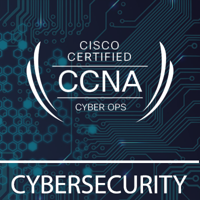
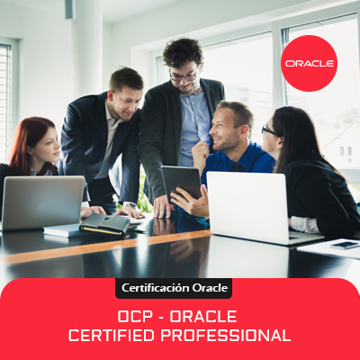
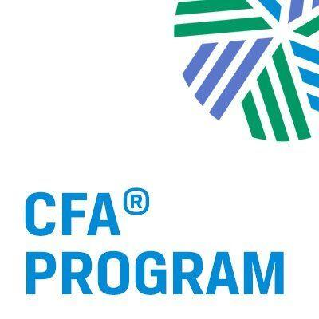
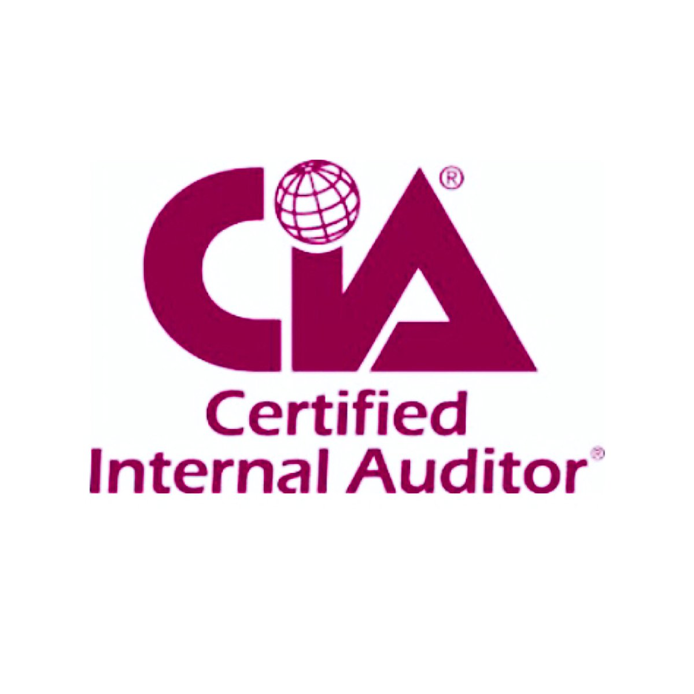
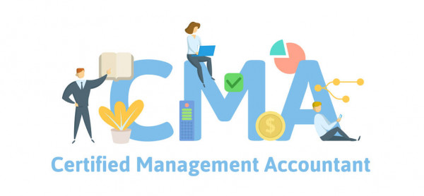
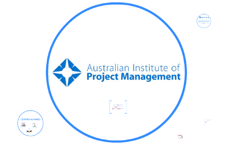

| Inicio | Cursos | Certificaciones | Especializaciones | Intranet |
|---|
|
||||||||
Certificaciones |
||||||||
Certificacion Microsoft AvanzadoLa certificacion esta dirigida para publico en general que posean los conocimientos
|
|
|  |
Certificacion CISCO CYBERSECURITY OPERATIONSActualmente, las organizaciones afrontan los desafíos de detectar rapido
|
OCP - ORACLE CERTIFIED PROFFESIONALLogra los conocimientos y habilidades avanzados requeridos por los |
 |
Analista Financiero Certificado (CFA)El CFA designa una certificacion profesional ofrecida por el CFA Institute a |
 |
 |
Auditor Interno Certificado (CIA)14001 e ISO 45001 proporciona a los participantes los conocimientos y habilidades necesarias para realizar una auditoria interna e informar sobre la implementacion y el mantenimiento efectivo del sistema de gestion de acuerdo con la ISO 19011. |
Contador de Gestion Certificado (CMA)es una designacion contable que significa experiencia en contabilidad financiera |
 |
Curso Social Media para Principiantes.Este curso es ofrecido por Innovation & Entrepreneurship Business |
|
Curso Community Manager.La pagina Cursos de community manager gratis busca acercar a las personas |
Certificacion AIPMEl Australian Insitute of Project Management (Instituto Australiano de |
 |
Certificado introductorio en administracion de proyectosEste tipo de credencial no requiere conocimientos o experiencia previa en |
Programa de certificado acelerado: operaciones comerciales internacionales y |
||||
Gestion de negocios globalEste programa capacitara al plomo de manera efectiva en el entorno empresarial |
||||
|
||||